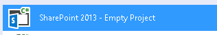
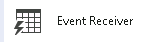
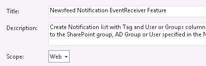
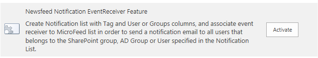
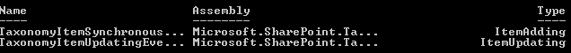
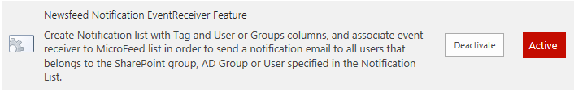
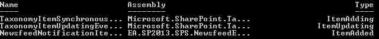

Introduction
In SharePoint we can use event receivers to trigger events like adding, updating, deleting elements from a list. When we need to do some extra tasks it is really useful and straightforward method.
I’d like to explain what happens behind scenes when we are creating Event Receiver project in Visual Studio.
In this case I will use Visual Studio 2013 and SharePoint 2013.
Event Receiver parameters
First of all, we need to define the Event Receiver parameters:
- Scope: only one List (Lists/PublishedFeed)
- Activation Scope: using a Web-scoped Feature
- Type: ItemAdded (complete list here)
- Execution Stage: first add the item, later execute my code – so, ItemAdded instead ItemAdding
Create event receiver
Now we can follow this procedure for creating the Event Receiver:
Create New Project in Visual Studio of type “SharePoint 2013 – Empty Project”

Add new item of type “Event Receiver”

Rename Feature to give its more friendly name and define scope to Web

Edit Elements.xml file
You will notice that there is Receivers element with ListTemplateId=”100” (or similar depends on the list type you chose when created Event Receiver) It is important to know that if you deploy this feature with this Event Receiver it will be deployed on all “Custom Lists”.
Our scope is to have only in one list so we will update with that:
1
2
3
4
5
6
7
8
9
10
11
12
<Elements xmlns="http://schemas.microsoft.com/sharepoint/">
<Receivers ListUrl="Lists/PublishedFeed" >
<Receiver>
<Name>NewsfeedNotificationItemAdded</Name>
<Type>ItemAdded</Type>
<Assembly>$SharePoint.Project.AssemblyFullName$</Assembly>
<Class>NewsfeedEventReceiver.NewsfeedNotification.NewsfeedNotification</Class>
<SequenceNumber>10000</SequenceNumber>
</Receiver>
</Receivers>
</Elements>IMPORTANT to put ListUrl in order to scope the activation of this event receiver only to this list.
Edit .cs to create your custom code
1
2
3
4
5
6
7
8
9
10
11
12
13
14
15
16
17
18
19
20
21
22
23
24namespace NewsfeedEventReceiver.NewsfeedNotification
{
/// <summary>
/// List Item Events
/// </summary>
public class NewsfeedNotification : SPItemEventReceiver
{
/// <summary>
/// An item was added.
/// </summary>
public override void ItemAdded(SPItemEventProperties properties)
{
base.ItemAdded(properties);
string title = properties.ListItem.Title;
string content = properties.ListItem["SearchContent"].ToString();
SPDiagnosticsService diagSvc = SPDiagnosticsService.Local;
diagSvc.WriteTrace(0, new SPDiagnosticsCategory("Newsfeed Notification", TraceSeverity.Monitorable, EventSeverity.Information),
TraceSeverity.Monitorable, "Writing to the ULS log: {0}", new object[] { title + ": " + content });
}
}
}Deploy the solution in SharePoint That will activate the feature and the feature activation process automatically will attach the event receiver to the list.
Note: If you deactivate the feature the event receiver will be removed from the list too.
Test Event Receiver We can use this PowerShell to check that Event Receiver is attached.
1 | $spWeb = Get-SPWeb http://site; |
Results
So, if the feature is disabled: 
We will have these OOB event receivers: 
And if the feature is enabled: 
We will have our own event receiver too: 